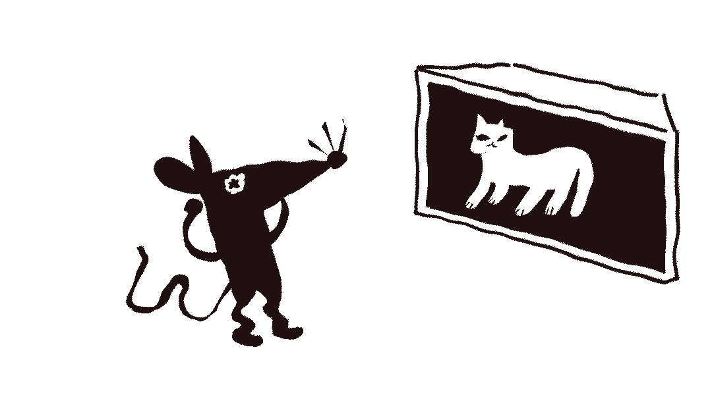
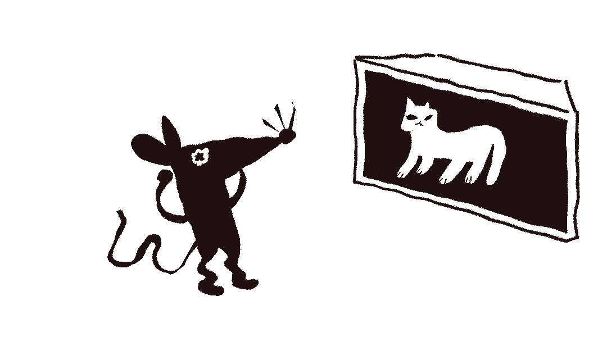

정보
배트맨처럼 생각하는 방법
글 쓴 사람
그림 그린 사람
다크나이트! 고담시의 수호자! 어둠의 성기사! 배트맨은 많은 사람의 우상이죠. 배트맨처럼 어둠 속에서 움직이고 싶다면 먼저 배트맨처럼 생각하고 행동해 보일 필요가 있어요. 이 글을 읽고 재미로, 하지만 본격적으로 배트맨 흉내를 내 보세요.
가능하면 복장을 갖추세요. 배트맨 복장은 상당히 인기가 있어서 쉽게 찾을 수 있어요. 당신이 배트맨처럼 보이고 싶다면, 의상을 사는 것이 가장 좋아요.
1.
정의를 위해 싸워요. 배트맨은 악에 대항하는 슈퍼히어로예요. 다양한 매체에서 갱단, 슈퍼 빌런, 펭귄, 유전자가 조작된 괴물 악어, 악마 삐에로, 냉동 인간 등을 무찔러 왔어요. 일단 배트맨이 되고 싶다면 정의를 위해 싸우고자 하는 마음가짐이 있어야해요.
2.
선량한 사람을 보호해요. 배트맨, 본명 부르스 웨인은 부모님이 강도에게 살해당한 과거를 지니고 있어요. 그의 부모님은 정직하고 선량하며 노력하는 사람들이었으며, 무엇보다 브르스 웨인을 사랑했어요. 배트맨으로서 그의 역할은 부모님과 같은 선량한 사람들을 악의 손아귀로부터 구하는 것이죠. 당신이 정말 배트맨처럼 되고 싶다면, 선량한 사람을 지키도록 해요.
3.
도구를 사용해요. 배트맨은 그 어떤 슈퍼히어로보다 많은 도구를 가지고 있어요. 그래서 배트맨처럼 되기 위해서는 최신 기술 동향을 파악하고 있어야 해요.
4.
자기만의 비밀기지를 만들어요. 배트맨은 비밀기지가 필요해요 이를 뱃케이브(Bat cave)라고 부르는데, 여기에 모든 도구, 복장, 연구실 등이 숨겨져 있어요. 실제 영화처럼 비밀문이나 통로를 만들고 자기만의 맨션 지하에 숨길 수는 없겠지만, 당신만의 공간이 있다면 그곳도 충분히 비밀기지가 될 수 있어요.
 

5.
공포에 맞서요. 배트맨은 박쥐가 무서워서 자신의 상징을 박쥐로 정했어요. 배트맨은 스스로 공포가 되어 적의 심장에 자신의 존재를 새기고자 했어요. 당신이 두려워하는 것이 무엇인지 생각해보고 배트맨이 한 것처럼 자신을 강하게 만들어 보아요
6.
수단과 방법을 가리지 않아요. 배트맨은 가끔 법의 범위 밖에서 행동해요. 그래서 배트맨은 경찰이 아니지만, 경찰과 협동해 악당을 물리치죠. 그러나 경찰은 배트맨을 체포하려 해요. 그래도 배트맨은 악을 무찌르기 위해 싸워요. 당신은 이런 복잡한 관계 속에서 슈퍼히어로의 역할을 유지할 수 있나요?
7.
배트맨처럼 말해요. 배트맨의 목소리는 매우 낮으며 거칠어요. 들었을 때, 사포를 연상시키곤 하죠. 배트맨의 목소리는 정체를 숨기기 위해 일부로 변조한 것이예요. 이렇게 자신의 정체를 감추는 것도 배트맨이 해야 할 일이죠. 당신의 정체를 적으로부터 감추어보세요.